Ponte das Cinco Safras
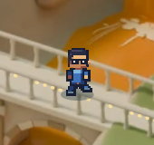
Rampas, clareiras e acessos refeitos no Blender. Feka percorre o Império com o sprite e a animação do World, passando atrás dos elementos em primeiro plano e chegando a cada fase pelo chão da ilha.
Captura do jogo: pomar, aqueduto, ponte, nascente e Santuário das Raízes.
Comparações do mesmo instante do percurso. Apenas a passagem de profundidade foi ativada ou desativada; posição, câmera e sprite são iguais.

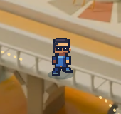
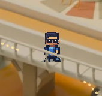
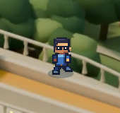
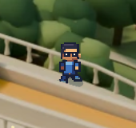
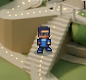
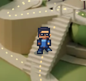
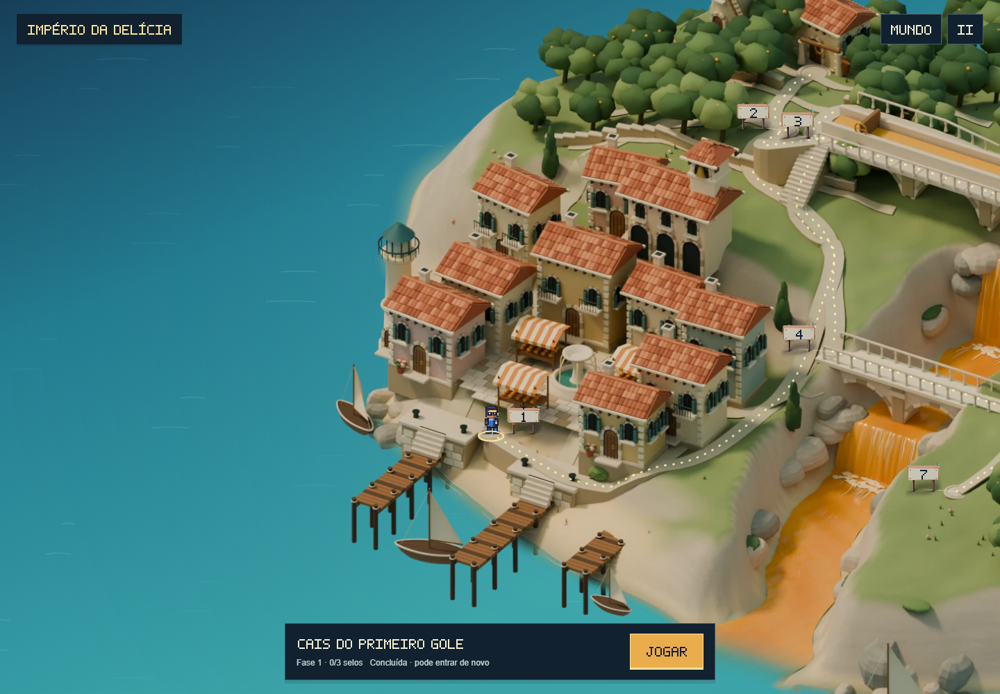
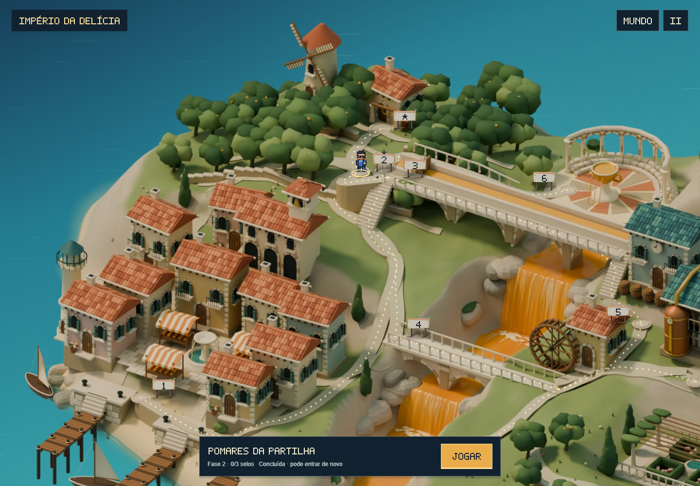
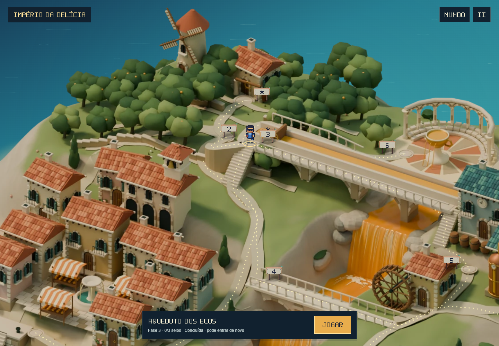
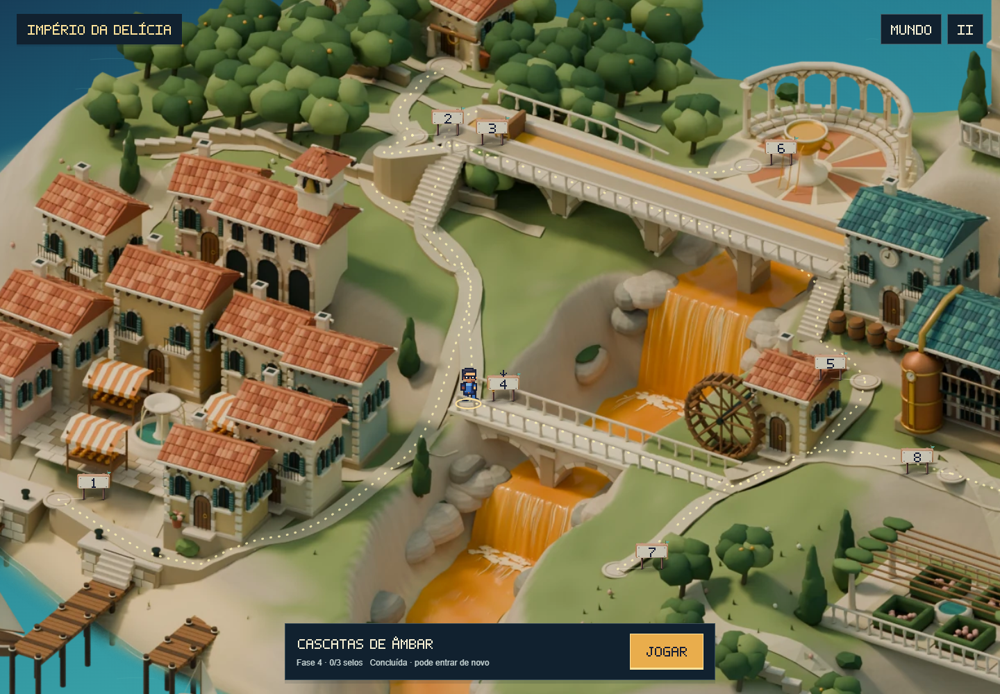
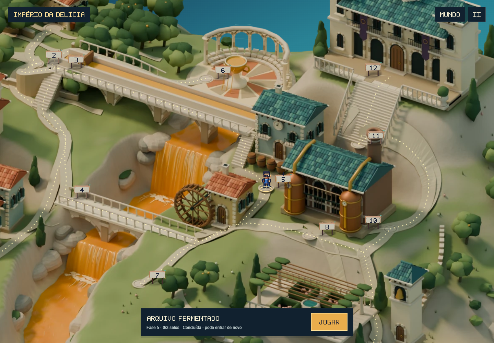
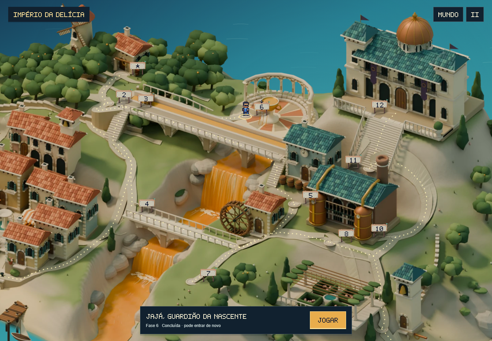
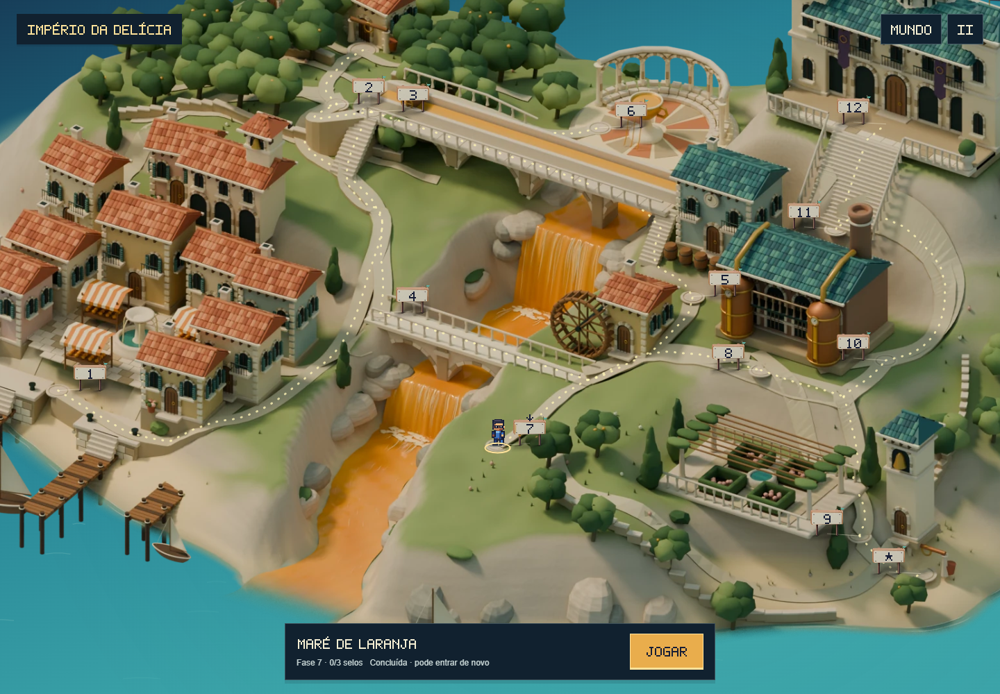
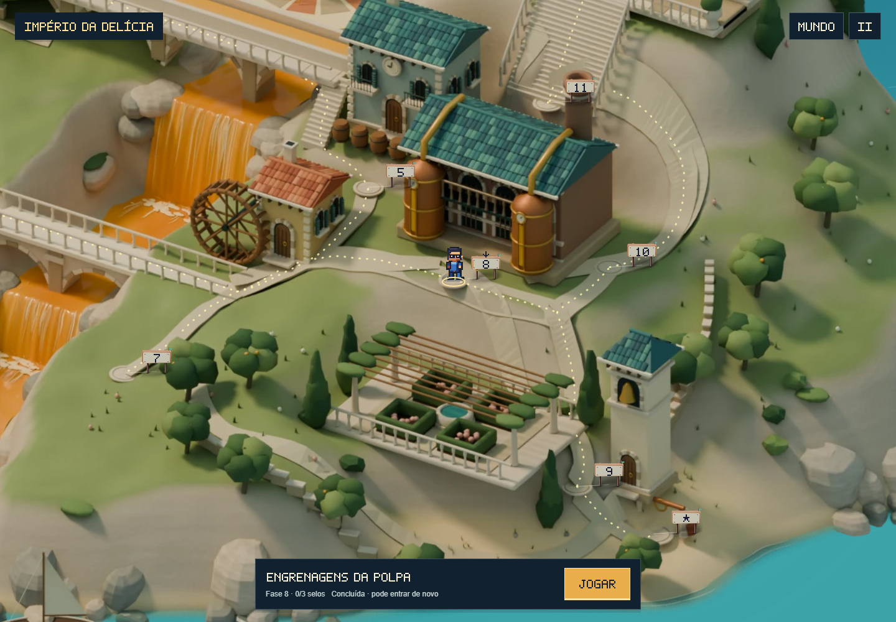
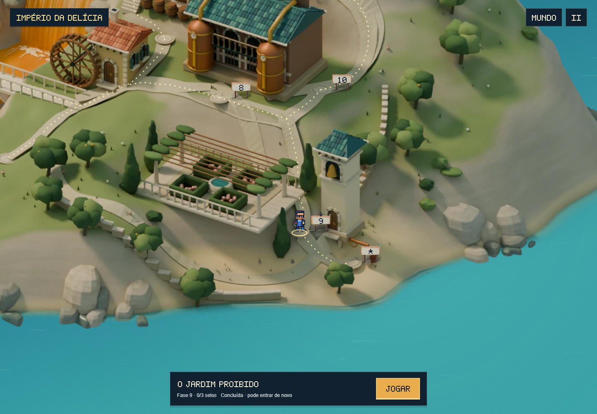
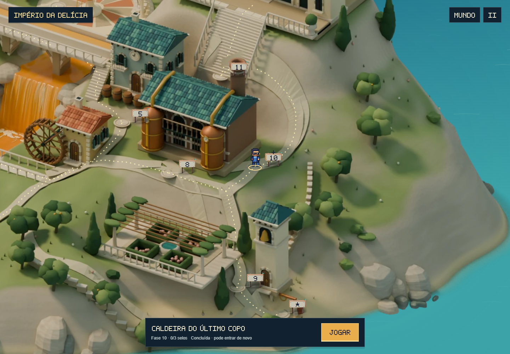
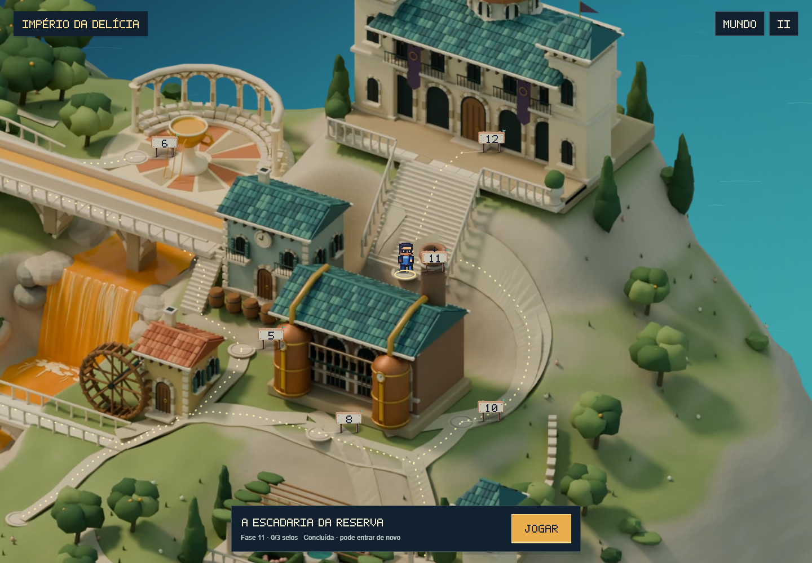
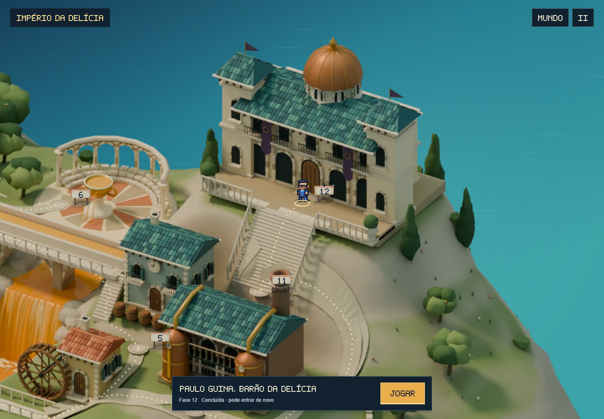
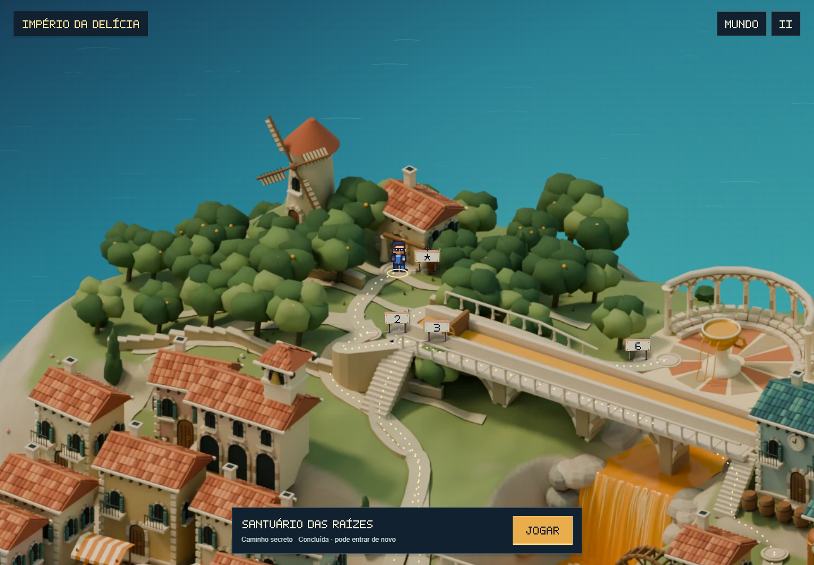
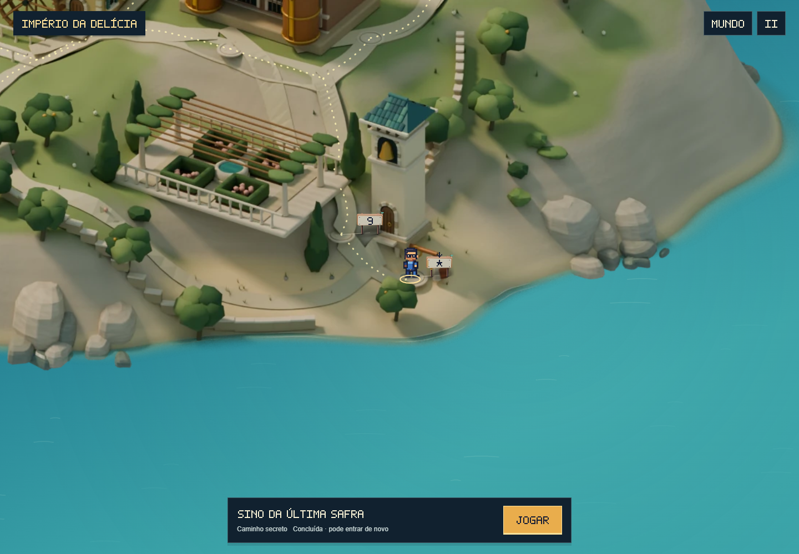
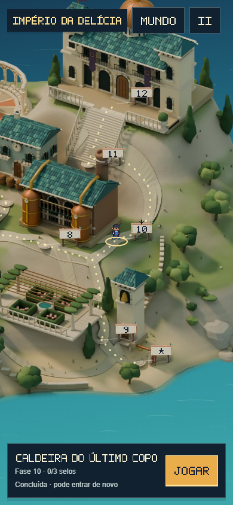